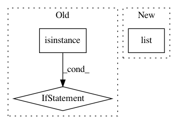

1a6d4020c53e2b39e224616481528fad901cbd4e,deeppavlov/core/commands/infer.py,,predict_on_stream,#Any#Any#Any#,116
Before Change
for res in model(batch):
if type(res).__module__ == "numpy":
res = res.tolist()
if not isinstance(res, str):
res = json.dumps(res, ensure_ascii=False)
print(res, flush=True)
if f is not sys.stdin:
f.close()
After Change
args_count = len(model.in_x)
while True:
batch = list((l.strip() for l in islice(f, batch_size*args_count)))
if not batch:
break
In pattern: SUPERPATTERN
Frequency: 3
Non-data size: 3
Instances
Project Name: deepmipt/DeepPavlov
Commit Name: 1a6d4020c53e2b39e224616481528fad901cbd4e
Time: 2018-10-15
Author: yoptar@gmail.com
File Name: deeppavlov/core/commands/infer.py
Class Name:
Method Name: predict_on_stream
Project Name: microsoft/nni
Commit Name: 10d7ece1c34c5533262a54d20d974a3d04f0b7ce
Time: 2020-09-15
Author: 40699903+liuzhe-lz@users.noreply.github.com
File Name: src/sdk/pynni/nni/compression/tensorflow/compressor.py
Class Name: Compressor
Method Name: __init__
Project Name: microsoft/nni
Commit Name: 10d7ece1c34c5533262a54d20d974a3d04f0b7ce
Time: 2020-09-15
Author: 40699903+liuzhe-lz@users.noreply.github.com
File Name: src/sdk/pynni/nni/compression/tensorflow/compressor.py
Class Name:
Method Name: _instrument_model